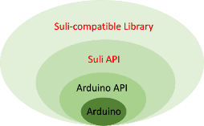

1. Suli Introduction
1.1 What is Suli?
Suli is the abbreviation for Seeed Unified Library Interface, it is a consistent API that fits multiple platforms (like Arduino, mbed,launchpad ,Raspberry Pi, and etc) .
1.2 Why Suli?
Previously ,in the market of open source hardware ,the majority of open source modules are applied on arduino platform . the main reason is that arduino is so simple and especially it has enormous arduino-compatible libraries for all sorts of sensors, actuators, displays and the other useful modules .but so far as the development of open source hardware ,there are more and more powerful and multiple platforms are emerging .such as Mbed ,launchpad,raspberry.Each platform has its own APIs, thus obviously those arduino-compatible libraries can not work on these platforms .Which means as for one and completely the same module ,when it is used on different platforms ,it still needs different compatible library as well . Just like the following images shows : However ,there are hundreds of modules ,and it will be more ,so are the platforms .Apparently it is very inefficient ,and sometimes not easy .Is there any way to simplify this job ?Can this be avoidable ? Precisely ,one module one library ? The answer is Yes ,that is Suli .
1.3 How does Suli works?
Just have a look at the following images:  Compared with the images above there are four layers here ,the added layer is Suli API ---an consistent interface .it is based on different API of different platform by calling functions respectively. In this way ,the library for any open source modules can be wrote by using the same interface .That means after unifying the interface ,each single module can just has one library regardless of the platform it is applied on .That is suli-compatible library .It is imaginable that suli-compatible library will be more complicated than arduino-compatible library ,however ,considering its advantage of compatibility ,it is worthwhile .
Here is the whole picture:
Platform : Aduino, Mbed ,Raspberry Pi, LauchPad……
1.4 How to use Suli？
In general ,using a suli-compatible library is more complicated than using a arduino library , because we should unify the interface
frist .But beyond this , the left thing is basically the same ,and allow for its compatibility ,it is acceptable anyway.
Roughly , using a suli-compatible library can be divided by four steps:
*step one: Unifying the interface.
*step two: Importing the library.
*step three: Write the main program .
*step four: Connect hareware and run the program.
1.5 How to Write a Suli-compatible Library
Sometimes we still need to write a Suli-compatible library when we can not find a suli-compatible library to download . As we all know, libraries is base on APIs by calling functions. Writting a Suli-compatible library is the same as writting a arduino compatible library ,the only thing different is using Suli APIs . So before we start to write a Suli-compatible Library we should be familiar with its APIs first .
2.Suli APIs
suli_pin_init(IO_T *pio, PIN_T pin)
* Description
Initialize the specified pin .
* Parameters
pio: the name of the pin that choose to connect
pin: the pin that choose to connect
suli_pin_dir(IO_T *pio, DIR_T dir)
* Description
Configures the specified pin to behave either as an input or an output.
* Parameters
pio: the name of the pin that choose to connect
dir: the direction of the specified pin ,HAL_PIN_INPUT or HAL_PIN_OUTPUT.
* Returns
None
* Example
#include "Suli.h"
IO_T io_led; // pin name
PIN_T pin_led = P0_7; // LED connected to digital pin P0_7
int main ()
{
suli_pin_init(&io_led,pin_led); // pin initialize
suli_pin_dir(&io_led,HAL_PIN_INPUT); // set pin direction
while(1)
{
suli_pin_write(&io_led, HAL_PIN_HIGH); // output a high voltage
suli_delay_ms(1000); // delay 1s
suli_pin_write(&io_led, HAL_PIN_LOW); // output a low voltage
suli_delay_ms(1000); // delay 1s
}
}
suli_pin_write(IO_T *pio, int16 state)
* Description Make a digital pin output a HIGH voltage or a LOW voltage. Specifically, outputting 5V(or 3.3V on 3.3V boards) for HIGH, 0V (ground) for LOW. If the state is HAL_PIN_HIGH then output a HIGH voltage ,likewise if the state is HAL_PIN_LOW then output a LOW voltage . Before this ,the digital pin must be configured as outputting mode by suli_pin_dir() .if not, the digital pin will be consistently output a LOW voltage ,Without explicitly setting suli_pin_dir(),suli_pin_write will have enabled the internal pull-up resistor, which acts like a large current-limiting resistor. * Parameters pio: the name of the pin that choose to connect value: HAL_PIN_HIGH or HAL_PIN_LOW
suli_pin_read(IO_T *pio)
* Description
Reads the value from a specified digital pin, either HIGH or LOW.
* Parameters
pio: the name of the pin that choose to connect
* Returns
HAL_PIN_HIGH or HAL_PIN_LOW
* Example
Sets pin P0_7 to the same value as pin P0_6, declared as an input.
#include "Suli.h"
IO_T io_in;
IO_T io_out;
PIN_T pin_in = P0_7;
PIN_T pin_out = P0_6;
int main ()
{
suli_pin_init(&io_in,pin_in);
suli_pin_init(&io_out,pin_out);
suli_pin_dir(&io_in,HAL_PIN_INPUT);
suli_pin_dir(&io_out,HAL_PIN_OUTPUT);
while(1)
{
int val = suli_pin_read(&io_out);
suli_pin_write(&io_in,val);
}
}
suli_pulse_in(IO_T *pio, uint8 state)
* Description Reads the time that a pulse (either HIGH or LOW) continued on a pin. in other words read the length of the pulse. Gives up and returns 0 if no pulse starts within a specified time out. The timing of this function has been determined empirically and will probably show errors in longer pulses. Works on pulses from 10 microseconds to 3 minutes in length. * Parameters pio: the name of the pin that choose to connect state: type of pulse to read: either HAL_PIN_HIGH or HAL_PIN_LOW. (int) * Returns the length of the pulse (in microseconds) or 0 if no pulse started before the timeout (unsigned long) * Example to be finished
suli_analog_init(ANALOG_T * aio, PIN_T pin)
* Description Initialize the specified pin * Parameters aio: the name of the pin that choose to connect pin: the pin that choose to connect
suli_analog_read(ANALOG_T * aio)
* Description Reads the value from the specified analog pin. generally the board contains 10-bit analog to digital converter. This means that it will map input voltages between 0 and 5 volts into integer values between 0 and 1023. This yields a resolution between readings of: 5 volts / 1024 units or, .0049 volts (4.9 mV) per unit. * Parameters aio: the name of the pin that choose to connect * Returns int (0 to 1023) * Example to be finished
suli_delay_ms()
* Description Pauses the program for the amount of time (in milliseconds) specified as parameter. (There are 1000 milliseconds in a second.) * Parameters ms: the number of milliseconds to pause (unsigned long)
suli_delay_us()
* Description Pauses the program for the amount of time (in microseconds) specified as parameter. There are a thousand microseconds in a millisecond, and a million microseconds in a second.Currently, for arduino, the largest value that will produce an accurate delay is 16383. * Parameters us: the number of microseconds to pause (unsigned int)
suli_millis()
* Description Returns the number of milliseconds since your board began running the current program. * Parameters None * Returns the number of milliseconds since your board began running the current program. * Example to be finished
suli_micros()
* Description
Returns the number of microseconds since your board began running the current program.
* Parameters
None
* Returns
the number of microseconds since your board began running the current program.
* Example
to be finished
suli_i2c_init(void * i2c_device)
* Description I2C interface initialize. * Parameters i2c_device: i2c device pointer * Returns the number of microseconds since your board began running the current program. * Example to be finished
suli_i2c_write(void * i2c_device, uint8 dev_addr, uint8 *data, uint8 len)
* Description Write a buff to I2C . * Parameters i2c_device: i2c device pointer dev_addr: device address data: data buff len: data length * Returns Data length. * Example to be finished
suli_i2c_read(void * i2c_device, uint8 dev_addr, uint8 *buff, uint8 *len)
* Description Read a buff from I2C . * Parameters i2c_device: i2c device pointer dev_addr: device address data: data buff len: data length * Returns Data length. * Example to be finished
suli_uart_init(void * uart_device, int16 uart_num, uint32 baud)
* Description
UART Init.
* Parameters
uart_device: uart device pointer
uart_num: for some MCU, there's more than one uart, this is the number of uart
for Arduino-UNO(or others use 328, 32u4, 168), these is a hardware uart and software uart.
uart_num = -1 - Software Serial
uart_num = 0, uart0
uart_num = 1, uart1, Arduino Mega Only
uart_num = 2, uart2, Arduino Mega Only
uart_num = 3, uart3, Arduino Mega Only
baud： baudrate
suli_uart_send(void * uart_device, int16 uart_num, uint8 *data, uint16 len)
* Description
Send a Buff to uart .
* Parameters
uart_device: uart device pointer
uart_num: uart number
*data: buff to sent
len: data length
* Returns
None
* Example
to be finished
suli_uart_send_byte(void * uart_device, int16 uart_num, uint8 data)
* Description
seed a byte to uart .
* Parameters
uart_device: uart device pointer
uart_num: uart number
* Returns
None
* Example
to be finished
suli_uart_read_bytes(void * uart_device, int16 uart_num)
* Description
Read a byte from uart .
* Parameters
uart_device: uart device pointer
uart_num: uart number
* Returns
Bytes data
* Example
to be finished
suli_uart_readable(void * uart_device, int16 uart_num)
* Description
If uart get data, return 1-readable, 0-unreadable .
* Parameters
uart_device: uart device pointer
uart_num: uart number
* Returns
1-readable, 0-unreadable .
* Example
to be finished
Copyright (c) 2008-2016 Seeed Development Limited (www.seeedstudio.com / www.seeed.cc)